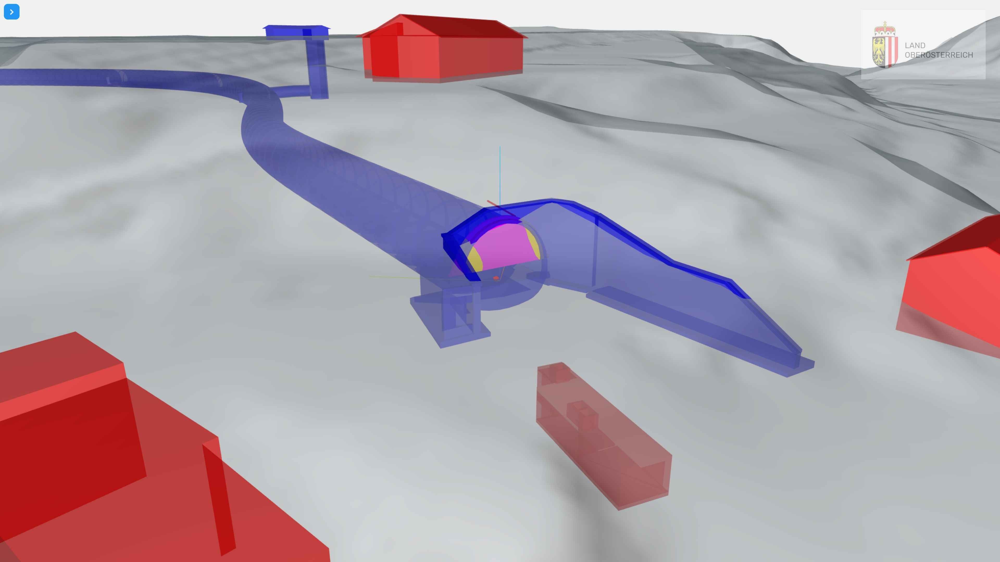
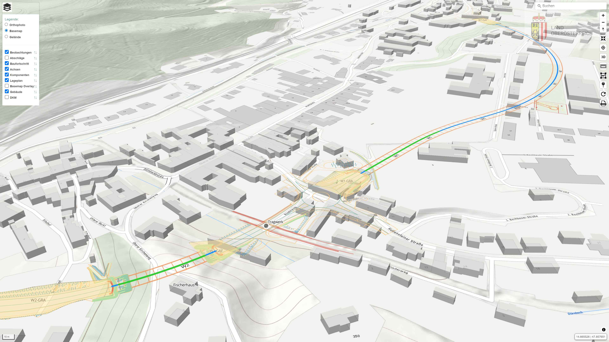
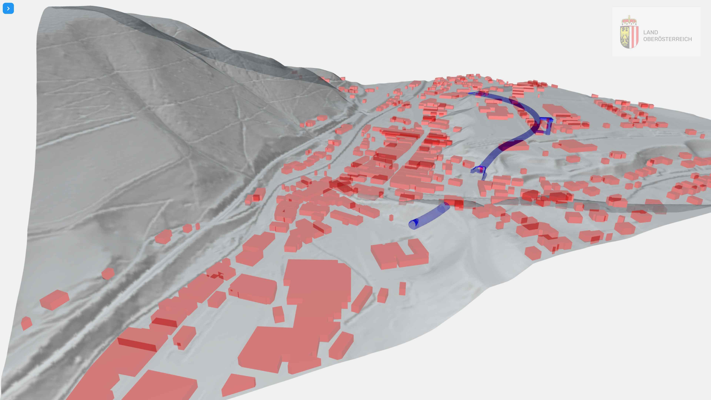
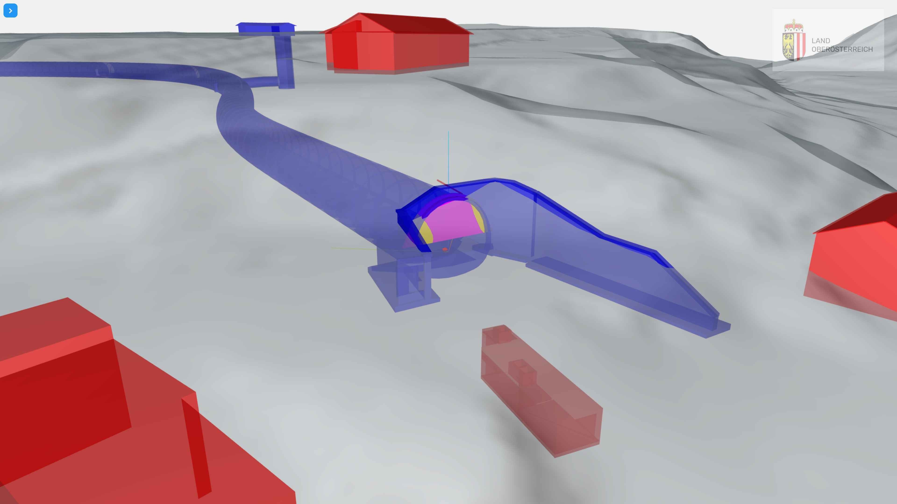
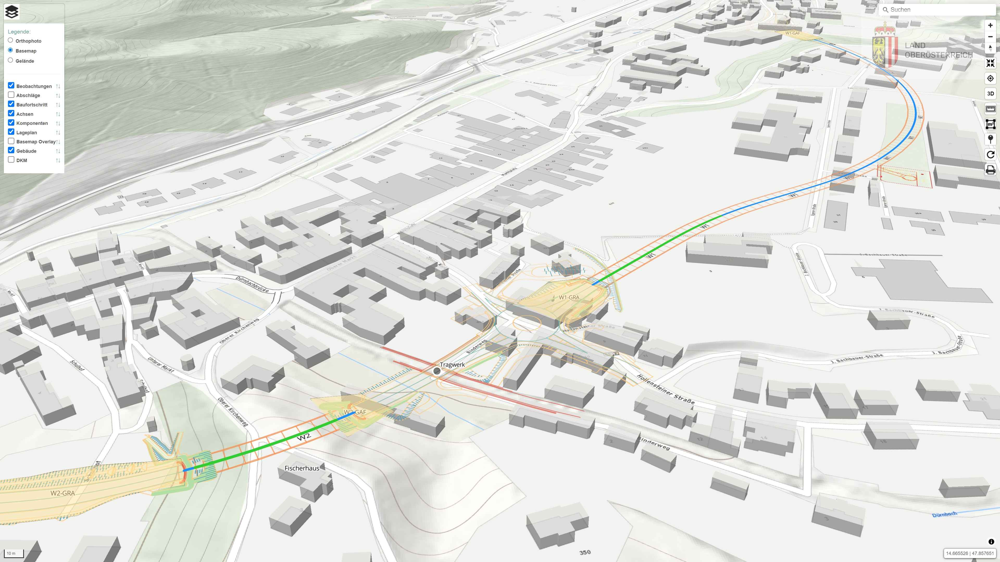
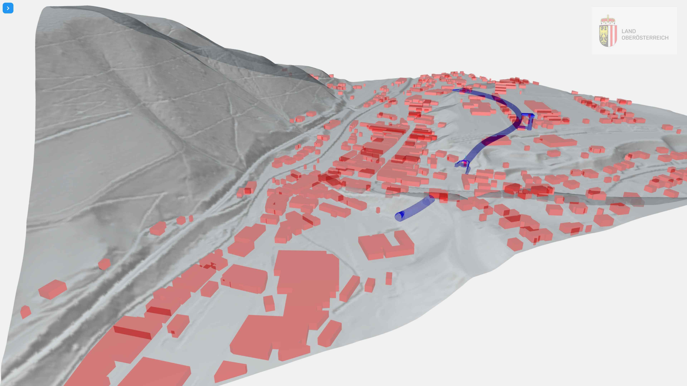

Fachschale TOMKIT.GEO
Die baugeologische Dokumentation kann für jedes Projekt individuell konfiguriert werden. Die einzelnen geologischen Parameter werden dabei direkt vor Ort an die Gegebenheiten angepasst. Die Aufnahmen können erstmals im 3D Raum frei definiert werden (z.B. Kaverne). Spezielle Abfragen erlauben eine nachvollziehbare Quantifizierung geologischer Daten und deren Ausgabe in Form von Berichten und Tabellen.
 




